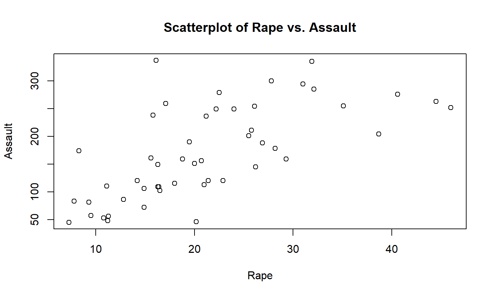
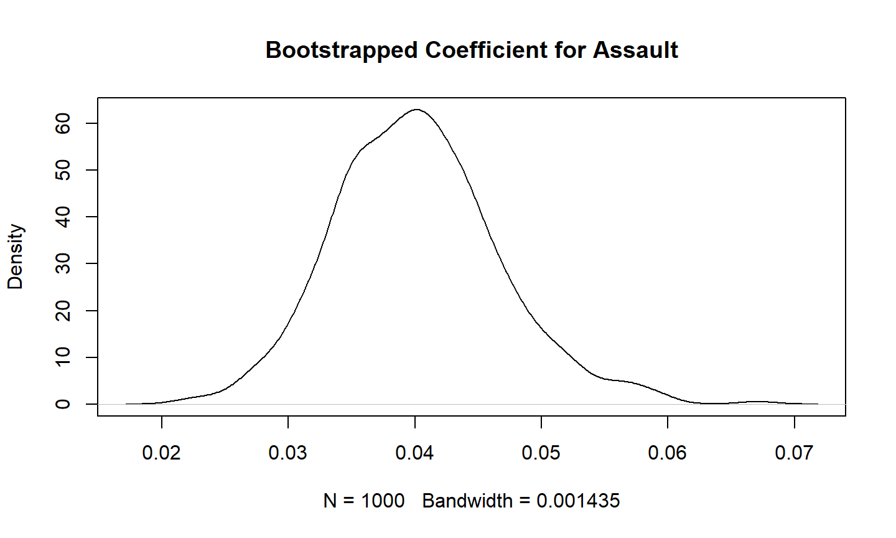

17-10-2023
Recap of Last Week
Recap Lecture 6
- Introduction into Data Modelling
- Simple Linear Regression
- Assumptions of Linear Regressions
- Correlation versus Causation
Outline of Lecture 7
Outline of Lecture 7
- Categorical Variable Linear Regression
- Multiple Regression
- Logit Model
- Bootstrapping
Steps of Data Analysis

Categorical Variable Linear Regression
Load Data
# Load data library(gapminder) # Explore data glimpse(gapminder)
## Rows: 1,704 ## Columns: 6 ## $ country <fct> "Afghanistan", "Afghanistan", "Afghanistan", "Afghanistan", … ## $ continent <fct> Asia, Asia, Asia, Asia, Asia, Asia, Asia, Asia, Asia, Asia, … ## $ year <int> 1952, 1957, 1962, 1967, 1972, 1977, 1982, 1987, 1992, 1997, … ## $ lifeExp <dbl> 28.801, 30.332, 31.997, 34.020, 36.088, 38.438, 39.854, 40.8… ## $ pop <int> 8425333, 9240934, 10267083, 11537966, 13079460, 14880372, 12… ## $ gdpPercap <dbl> 779.4453, 820.8530, 853.1007, 836.1971, 739.9811, 786.1134, …
Select 2007
gapminder2007 <- gapminder %>% filter(year == 2007) %>% select(country, lifeExp, continent, gdpPercap) head(gapminder2007, 5)
## # A tibble: 5 × 4 ## country lifeExp continent gdpPercap ## <fct> <dbl> <fct> <dbl> ## 1 Afghanistan 43.8 Asia 975. ## 2 Albania 76.4 Europe 5937. ## 3 Algeria 72.3 Africa 6223. ## 4 Angola 42.7 Africa 4797. ## 5 Argentina 75.3 Americas 12779.
Visualize - Histogram
histogram <- ggplot(gapminder2007, aes(x = lifeExp)) +
geom_histogram(binwidth = 5, color = "white") +
labs(x = "Life expectancy", y = "Number of countries",
title = "Histogram of distribution of worldwide life expectancies") +
theme_classic()
Visualize - Histogram
histogram

Histogram per Continent
histogram_continent <- ggplot(gapminder2007, aes(x = lifeExp)) +
geom_histogram(binwidth = 5, color = "white") +
labs(x = "Life expectancy",
y = "Number of countries",
title = "Histogram of distribution of worldwide life expectancies") +
theme_light() +
facet_wrap(~ continent, nrow = 2)
Histogram per Continent
histogram_continent

Boxplot per Continent
boxplot_continent <- ggplot(gapminder2007, aes(x = continent, y = lifeExp)) +
geom_boxplot() +
labs(x = "Continent", y = "Life expectancy",
title = "Life expectancy by continent") +
theme_minimal()
Boxplot per Continent
boxplot_continent

Exploratory Data Analysis
lifeExp_by_continent <- gapminder2007 %>%
group_by(continent) %>%
summarize(median = median(lifeExp),
mean = mean(lifeExp))
lifeExp_by_continent
## # A tibble: 5 × 3 ## continent median mean ## <fct> <dbl> <dbl> ## 1 Africa 52.9 54.8 ## 2 Americas 72.9 73.6 ## 3 Asia 72.4 70.7 ## 4 Europe 78.6 77.6 ## 5 Oceania 80.7 80.7
Linear Regression
lifeExp_model <- lm(lifeExp ~ continent, data = gapminder2007) summary(lifeExp_model)
## ## Call: ## lm(formula = lifeExp ~ continent, data = gapminder2007) ## ## Residuals: ## Min 1Q Median 3Q Max ## -26.9005 -4.0399 0.2565 3.3840 21.6360 ## ## Coefficients: ## Estimate Std. Error t value Pr(>|t|) ## (Intercept) 54.806 1.025 53.446 < 2e-16 *** ## continentAmericas 18.802 1.800 10.448 < 2e-16 *** ## continentAsia 15.922 1.646 9.675 < 2e-16 *** ## continentEurope 22.843 1.695 13.474 < 2e-16 *** ## continentOceania 25.913 5.328 4.863 3.12e-06 *** ## --- ## Signif. codes: 0 '***' 0.001 '**' 0.01 '*' 0.05 '.' 0.1 ' ' 1 ## ## Residual standard error: 7.395 on 137 degrees of freedom ## Multiple R-squared: 0.6355, Adjusted R-squared: 0.6249 ## F-statistic: 59.71 on 4 and 137 DF, p-value: < 2.2e-16
Regression Table
get_regression_table(lifeExp_model)
## # A tibble: 5 × 7 ## term estimate std_error statistic p_value lower_ci upper_ci ## <chr> <dbl> <dbl> <dbl> <dbl> <dbl> <dbl> ## 1 intercept 54.8 1.02 53.4 0 52.8 56.8 ## 2 continent: Americas 18.8 1.8 10.4 0 15.2 22.4 ## 3 continent: Asia 15.9 1.65 9.68 0 12.7 19.2 ## 4 continent: Europe 22.8 1.70 13.5 0 19.5 26.2 ## 5 continent: Oceania 25.9 5.33 4.86 0 15.4 36.4
Fitted Values and Residuals
regression_points <- get_regression_points(lifeExp_model, ID = "country") head(regression_points, 5)
## # A tibble: 5 × 5 ## country lifeExp continent lifeExp_hat residual ## <fct> <dbl> <fct> <dbl> <dbl> ## 1 Afghanistan 43.8 Asia 70.7 -26.9 ## 2 Albania 76.4 Europe 77.6 -1.23 ## 3 Algeria 72.3 Africa 54.8 17.5 ## 4 Angola 42.7 Africa 54.8 -12.1 ## 5 Argentina 75.3 Americas 73.6 1.71
Multiple Regression
Use the US Arrests data
# Load the USArrests dataset data(USArrests) # View the first few rows of the dataset to understand its structure head(USArrests)
## Murder Assault UrbanPop Rape ## Alabama 13.2 236 58 21.2 ## Alaska 10.0 263 48 44.5 ## Arizona 8.1 294 80 31.0 ## Arkansas 8.8 190 50 19.5 ## California 9.0 276 91 40.6 ## Colorado 7.9 204 78 38.7
Fit a Multiple Regression Model
# Fit a multiple regression model with "Murder" as the dependent variable # and other variables as predictors murder_model <- lm(Murder ~ Assault + UrbanPop + Rape, data = USArrests) # Print the summary of the regression model summary(murder_model)
## ## Call: ## lm(formula = Murder ~ Assault + UrbanPop + Rape, data = USArrests) ## ## Residuals: ## Min 1Q Median 3Q Max ## -4.3990 -1.9127 -0.3444 1.2557 7.4279 ## ## Coefficients: ## Estimate Std. Error t value Pr(>|t|) ## (Intercept) 3.276639 1.737997 1.885 0.0657 . ## Assault 0.039777 0.005912 6.729 2.33e-08 *** ## UrbanPop -0.054694 0.027880 -1.962 0.0559 . ## Rape 0.061399 0.055740 1.102 0.2764 ## --- ## Signif. codes: 0 '***' 0.001 '**' 0.01 '*' 0.05 '.' 0.1 ' ' 1 ## ## Residual standard error: 2.574 on 46 degrees of freedom ## Multiple R-squared: 0.6721, Adjusted R-squared: 0.6507 ## F-statistic: 31.42 on 3 and 46 DF, p-value: 3.322e-11
Test for Multicollinearity - Correlation Matrix
# Create a correlation matrix cor(USArrests)
## Murder Assault UrbanPop Rape ## Murder 1.00000000 0.8018733 0.06957262 0.5635788 ## Assault 0.80187331 1.0000000 0.25887170 0.6652412 ## UrbanPop 0.06957262 0.2588717 1.00000000 0.4113412 ## Rape 0.56357883 0.6652412 0.41134124 1.0000000
# Interpret the results: # Values close to 1 or -1 suggest high correlation
Test for Multicollinearity - Scatterplots
# Create scatterplots
# You can choose which pairs of variables you want to plot
plot(USArrests$Rape, USArrests$Assault,
xlab = "Rape", ylab = "Assault",
main = "Scatterplot of Rape vs. Assault")

Test for Multicollinearity - VIF
library(car) # Calculate VIF for the model vif(murder_model)
## Assault UrbanPop Rape ## 1.794715 1.204229 2.015462
# Interpret the results: # High VIF values suggest potential multicollinearity.
Interaction Terms
Multiple Regression with Interaction Terms
# Fit a multiple regression model with the Diet and Time interaction chickweight_model <- lm(weight ~ Time * Diet, data = ChickWeight)
Multiple Regression with Interaction Terms
# Summary of the model summary(chickweight_model)
## ## Call: ## lm(formula = weight ~ Time * Diet, data = ChickWeight) ## ## Residuals: ## Min 1Q Median 3Q Max ## -135.425 -13.757 -1.311 11.069 130.391 ## ## Coefficients: ## Estimate Std. Error t value Pr(>|t|) ## (Intercept) 30.9310 4.2468 7.283 1.09e-12 *** ## Time 6.8418 0.3408 20.076 < 2e-16 *** ## Diet2 -2.2974 7.2672 -0.316 0.75202 ## Diet3 -12.6807 7.2672 -1.745 0.08154 . ## Diet4 -0.1389 7.2865 -0.019 0.98480 ## Time:Diet2 1.7673 0.5717 3.092 0.00209 ** ## Time:Diet3 4.5811 0.5717 8.014 6.33e-15 *** ## Time:Diet4 2.8726 0.5781 4.969 8.92e-07 *** ## --- ## Signif. codes: 0 '***' 0.001 '**' 0.01 '*' 0.05 '.' 0.1 ' ' 1 ## ## Residual standard error: 34.07 on 570 degrees of freedom ## Multiple R-squared: 0.773, Adjusted R-squared: 0.7702 ## F-statistic: 277.3 on 7 and 570 DF, p-value: < 2.2e-16
Logit
Introduction to the Logit Model
- Binary dependent variable
- Use the logistic function to estimate \(P(Y = 1)\)
- \(p(Y = 1) = \frac{1}{1 + e^{-(\beta_0 + \beta_1X_1 + \beta_2X_2 + \ldots + \beta_pX_p)}}\)
- Log-odds ratio: \(\log\left(\frac{p(Y = 1)}{1 - p(Y = 1)}\right) = \beta_0 + \beta_1X_1 + \beta_2X_2 + \ldots + \beta_pX_p\)
- Hence \(exp(\beta_j)\) is the change in the odds of the event happening for a one-unit increase in \(X_j\)
Example: - 50/50 chance: odds = 1 - 80/20 chance: odds = 0.8/0.2 = 4 - 4 times more chance of yes than no - The odds of passing is 4 (to 1)
Introduction to the Logit Model
Example: \[ \log\left(\frac{p(\text{Pass} = 1)}{1-p(\text{Pass} = 1)}\right) = \beta_0 + \beta_1 \cdot \text{Hours_Studied} + \epsilon \]
Odds ratio: the ratio of two odds
With the logit model we calculate how X variables affect the odds ratio \[ \text{Odds Ratio} = \frac{\text{Odds of passing with 3 hrs of study}}{\text{Odds of passing with 2 hrs of study}} = \frac{0.6/0.4}{0.5/0.5} = \frac{1.5}{1} = 1.5 \]
If \(exp(\beta_1) = 1.5\), then for one hour increase in study time, the odds of passing the exam increase by 50%.
This does NOT mean the chance of passing increases by 50%, as that only increased from 50% to 60%!
Diabetes Data
# Install and load the "MASS" package (if not already installed)
# install.packages("MASS")
library(MASS)
# Load the Pima Indians Diabetes dataset
data(Pima.te)
# Inspect the data
glimpse(Pima.te)
## Rows: 332 ## Columns: 8 ## $ npreg <int> 6, 1, 1, 3, 2, 5, 0, 1, 3, 9, 1, 5, 3, 10, 4, 9, 2, 4, 3, 7, 9, … ## $ glu <int> 148, 85, 89, 78, 197, 166, 118, 103, 126, 119, 97, 109, 88, 122,… ## $ bp <int> 72, 66, 66, 50, 70, 72, 84, 30, 88, 80, 66, 75, 58, 78, 60, 76, … ## $ skin <int> 35, 29, 23, 32, 45, 19, 47, 38, 41, 35, 15, 26, 11, 31, 33, 37, … ## $ bmi <dbl> 33.6, 26.6, 28.1, 31.0, 30.5, 25.8, 45.8, 43.3, 39.3, 29.0, 23.2… ## $ ped <dbl> 0.627, 0.351, 0.167, 0.248, 0.158, 0.587, 0.551, 0.183, 0.704, 0… ## $ age <int> 50, 31, 21, 26, 53, 51, 31, 33, 27, 29, 22, 60, 22, 45, 33, 46, … ## $ type <fct> Yes, No, No, Yes, Yes, Yes, Yes, No, No, Yes, No, No, No, No, No…
Logit Model in R
# Fit a logistic regression model (could also use probit)
diabetes_model <- glm(type ~ glu + age + bmi, data = Pima.tr,
family = binomial(link = "logit"))
# Summary of the model
summary(diabetes_model)
## ## Call: ## glm(formula = type ~ glu + age + bmi, family = binomial(link = "logit"), ## data = Pima.tr) ## ## Deviance Residuals: ## Min 1Q Median 3Q Max ## -2.2356 -0.6974 -0.3967 0.6956 2.3878 ## ## Coefficients: ## Estimate Std. Error z value Pr(>|z|) ## (Intercept) -9.405120 1.477177 -6.367 1.93e-10 *** ## glu 0.030850 0.006448 4.784 1.72e-06 *** ## age 0.052569 0.016970 3.098 0.00195 ** ## bmi 0.091871 0.032242 2.849 0.00438 ** ## --- ## Signif. codes: 0 '***' 0.001 '**' 0.01 '*' 0.05 '.' 0.1 ' ' 1 ## ## (Dispersion parameter for binomial family taken to be 1) ## ## Null deviance: 256.41 on 199 degrees of freedom ## Residual deviance: 188.39 on 196 degrees of freedom ## AIC: 196.39 ## ## Number of Fisher Scoring iterations: 5
Boostrapping
Assumptions in Regression Analysis
- When using
lm()R assumes that the assumptions for a linear regression model hold - What if they don’t hold?
- Has been discussed in the last lecture, different solutions
- Normally distributed errors = essential for statistical inference
- More popular now = non-parametric methods
- Non-parametric methods = no assumptions on distribution of error
- Very good to include as a robustness check!
- Checks whether results are robust to the assumptions on the error term
Introduction into Bootstrapping
- A resampling technique to estimate the variability of regression coefficients
- Assesses the robustness of your regression model
- A very popular and good robustness check
- If we had a random resampled collection of your datapoints,:
- Would your coefficients still be significant?
- Resampling from the data to estimate the regression coefficients multiple times.
- Central assumption for bootstrapping = The original sample accurately represents the actual population
Back to the US Arrests data
# Fit a linear multiple regression model murder_model <- lm(Murder ~ Assault + UrbanPop + Rape, data = USArrests) # Summary of the lm model summary(murder_model)
## ## Call: ## lm(formula = Murder ~ Assault + UrbanPop + Rape, data = USArrests) ## ## Residuals: ## Min 1Q Median 3Q Max ## -4.3990 -1.9127 -0.3444 1.2557 7.4279 ## ## Coefficients: ## Estimate Std. Error t value Pr(>|t|) ## (Intercept) 3.276639 1.737997 1.885 0.0657 . ## Assault 0.039777 0.005912 6.729 2.33e-08 *** ## UrbanPop -0.054694 0.027880 -1.962 0.0559 . ## Rape 0.061399 0.055740 1.102 0.2764 ## --- ## Signif. codes: 0 '***' 0.001 '**' 0.01 '*' 0.05 '.' 0.1 ' ' 1 ## ## Residual standard error: 2.574 on 46 degrees of freedom ## Multiple R-squared: 0.6721, Adjusted R-squared: 0.6507 ## F-statistic: 31.42 on 3 and 46 DF, p-value: 3.322e-11
Initialize before Boostrapping
# Set seed for reproducibility
set.seed(2023)
# Number of bootstraps
n_bootstraps <- 1000
# Initialize storage for bootstrapped coefficients
bootstrapped_coefs <- data.frame("Intercept" = rep(0, n_bootstraps),
"Assault" = rep(0, n_bootstraps),
"UrbanPop" = rep(0, n_bootstraps),
"Rape" = rep(0, n_bootstraps))
Perform Boostrapping
# Perform bootstrapping
for (i in 1:n_bootstraps) {
# Resample the dataset
resampled_data <- USArrests[sample(nrow(USArrests), replace = TRUE), ]
# Fit a regression model to the resampled data
resampled_model <- lm(Murder ~ Assault + UrbanPop + Rape,
data = resampled_data)
# Store the coefficients
bootstrapped_coefs[i, ] <- coef(resampled_model)
}
Visualize Boostrapping
# Visualize Bootstrapped Coefficients # Create a density plot for Temperature coefficient density_plot_assault <- density(bootstrapped_coefs[, 2]) plot(density_plot_assault, main = "Bootstrapped Coefficient for Assault")

Confidence Intervals
# Confidence Intervals
confidence_intervals <- t(sapply(1:4, function(j){
quantile(bootstrapped_coefs[, j], c(0.025, 0.975))
}))
colnames(confidence_intervals) <- c("Lower 2.5%", "Upper 97.5%")
rownames(confidence_intervals) <- colnames(bootstrapped_coefs)
# Print Confidence Intervals
confidence_intervals
## Lower 2.5% Upper 97.5% ## Intercept 0.33911949 6.5271506965 ## Assault 0.02817434 0.0547426312 ## UrbanPop -0.11341254 0.0002378989 ## Rape -0.05135256 0.2010056714
Assessing Significance with Bootstrapping
- We’ve performed bootstrapping to estimate the variability of regression coefficients.
- But how can we use this information to assess the significance of our results?
- Bootstrapping allows us to generate a distribution of coefficients.
- We can compare our original regression coefficients to this distribution to assess significance.
Assessing Significance
- Calculate the confidence intervals for each coefficient using bootstrapped data.
- If the confidence interval of a coefficient includes zero, it suggests that the coefficient is not statistically significant.
- If the interval does not include zero, it suggests significance.
Example: Murder Rate and Predictors
# Lm model confidence intervals get_regression_table(murder_model)
## # A tibble: 4 × 7 ## term estimate std_error statistic p_value lower_ci upper_ci ## <chr> <dbl> <dbl> <dbl> <dbl> <dbl> <dbl> ## 1 intercept 3.28 1.74 1.88 0.066 -0.222 6.78 ## 2 Assault 0.04 0.006 6.73 0 0.028 0.052 ## 3 UrbanPop -0.055 0.028 -1.96 0.056 -0.111 0.001 ## 4 Rape 0.061 0.056 1.10 0.276 -0.051 0.174
# Bootstrap confidence intervals confidence_intervals
## Lower 2.5% Upper 97.5% ## Intercept 0.33911949 6.5271506965 ## Assault 0.02817434 0.0547426312 ## UrbanPop -0.11341254 0.0002378989 ## Rape -0.05135256 0.2010056714
End of the Course Material
Overview
| Week | Topic |
|---|---|
| Week 1 | Introduction to R |
| Week 2 | Foundations of R |
| Week 3 | Data Wrangling |
| Week 4 | Data Visualization (pt.1) |
| Week 5 | Data Visualization (pt.2) |
| Week 6 | Introduction into Data Modelling in R |
| Week 7 | More on Data Modelling |
| Extra | Time for rescheduling/recap/presentations |